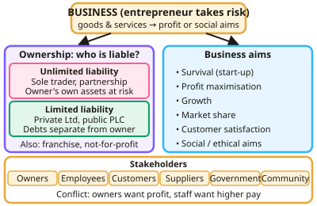

GCSE Business · Topic 1
Business in the real world and influences
This topic introduces what businesses are for, who owns them and what they are trying to achieve.
We look at entrepreneurs, risk and reward, how to spot an opportunity, and how firms add value and stand out from rivals.
Finally we cover business plans and stakeholders, the people affected by every business decision.
- 8 subtopics
- 261 questions
- Free: 1.1 notes and 10 questions
In this topic
- 1.1Business purpose, ownership and aimsFree below · 19 questions
- 1.2External influences on businessOpen in Full Marks · 19 questions
- 1.3Enterprise and entrepreneurship: what entrepreneurs do, their characteristics and motivationsOpen in Full Marks · 31 questions
- 1.4Risk and reward, and why businesses succeed or failOpen in Full Marks · 36 questions
- 1.5Spotting a business opportunity: customer needs, market research for new ideas and market mappingOpen in Full Marks · 41 questions
- 1.6Adding value, unique selling points and competitive advantageOpen in Full Marks · 33 questions
- 1.7Business plans: purpose, content and sources of support for start-upsOpen in Full Marks · 33 questions
- 1.8Stakeholders: roles, interests, conflicts and the impact of business decisions on themOpen in Full Marks · 49 questions
1.1 · Free notes
Business purpose, ownership and aims

Key points
- Businesses exist to provide goods and services, meeting customer needs and generating profit or achieving social aims.
- Entrepreneurs take risks, organise resources and make decisions; business start-ups face risk, uncertainty and cash flow pressure.
- Ownership types: sole trader and partnership (unlimited liability), private and public limited companies (limited liability), plus franchises and not-for-profit organisations.
- Business aims include survival, profit maximisation, growth, market share, customer satisfaction and social or ethical objectives.
- Stakeholders (owners, employees, customers, suppliers, government, local community) have different and sometimes conflicting interests.
- Location decisions consider proximity to market, labour, materials, competitors, costs and technology.
In more detail
- Liability compared: a sole trader with £20,000 of business debts can lose their house and savings (unlimited liability), but a shareholder who invested £5,000 in a Ltd company can lose only that £5,000 (limited liability).
- Ltd vs plc: a private limited company (Ltd) sells shares privately, often to family and friends. A public limited company (plc) can sell shares to the public on a stock exchange and needs at least £50,000 of share capital.
- Franchise in one line: the franchisee pays a fee and royalties to use an established brand such as McDonald's or Subway, and in return gets training, supplies and national advertising.
- SMART objectives: good aims are Specific, Measurable, Achievable, Realistic and Time-bound, e.g. "increase sales by 10% within 12 months".
- Aims change over time: a start-up usually aims to survive and break even. Once established it may aim for growth, market share or social goals.
Practice
Business purpose, ownership and aims: 10 questions
Pick an answer to check it, or open the answer for the explanation.
1. A sole trader has:
- Limited liability
- Unlimited liability
- Shareholders
- A board of directors
Show answer
B: Unlimited liability. The owner is personally responsible for business debts.
2. What is limited liability?
- Owners are responsible for all debts
- Owners can only lose the amount they invested
- Businesses pay no tax
- A limit on sales
Show answer
B: Owners can only lose the amount they invested. Company debts are separate from personal assets.
3. Which is a stakeholder in a business?
- Only the owner
- Employees, customers, suppliers and the local community
- Only shareholders
- Only the government
Show answer
B: Employees, customers, suppliers and the local community. Different stakeholders often have conflicting objectives.
4. What is a franchise?
- A business with no owner
- Buying the right to trade using an established brand's name and business model
- A charity
- A partnership only
Show answer
B: Buying the right to trade using an established brand's name and business model. The franchisee pays fees but gains brand recognition.
5. Which is a typical aim for a new business in its first year?
- Profit maximisation immediately
- Survival and building customer base
- Global expansion
- Paying large dividends
Show answer
B: Survival and building customer base. Cash flow and survival dominate early decisions.
6. Why might an entrepreneur choose to form a private limited company rather than remain a sole trader?
- To have unlimited liability
- To gain limited liability and find it easier to raise finance
- To avoid paying any tax
- To have no shareholders at all
Show answer
B: To gain limited liability and find it easier to raise finance. Limited liability protects personal assets if the business fails.
7. Which stakeholder is primarily interested in a business paying on time for goods supplied?
- Customers
- Suppliers
- Local community
- Government
Show answer
B: Suppliers. Suppliers rely on being paid to remain in business themselves.
8. Which statement about a partnership is correct?
- Partners normally have unlimited liability for the business's debts
- Partners can only lose the money they originally invested
- A partnership must have at least 50 owners
- Partnership shares are traded freely on the stock exchange
Show answer
A: Partners normally have unlimited liability for the business's debts. Partners in an ordinary partnership have unlimited liability, so their personal assets can be used to pay business debts. Shares are not traded on the stock exchange, and there is no 50-owner minimum.
9. Which is a feature of a private limited company (Ltd)?
- Its shares are traded openly on the stock exchange
- Its shares cannot be offered for sale to the general public
- Its owners have unlimited liability for debts
- It can never have more than one shareholder
Show answer
B: Its shares cannot be offered for sale to the general public. Private limited companies can only sell shares privately, by agreement. The shareholders have limited liability, and a Ltd can have one or many shareholders.
10. What is a key advantage of becoming a public limited company (plc)?
- The owner keeps complete control of decisions
- It can raise large sums by selling shares to the public
- It faces fewer legal reporting rules than a sole trader
- It avoids any risk of being taken over
Show answer
B: It can raise large sums by selling shares to the public. A plc can sell shares to the general public, raising large amounts of finance for growth. The cost is less owner control, more regulation and a risk of takeover.
Keep going in Full Marks
Full Marks has 19 questions on Business purpose, ownership and aims (9 more than here), set out in practice levels. You also get notes and 3D models for all 8 subtopics of Business in the real world and influences, plus games, timed exams and past papers.
On your exam board
- AQATopic 1: Business in the real world, Topic 2: Influences on business
- OCRTopic 1: Business activity, Topic 6: Influences on business
- EdexcelTopic 1.1: Enterprise and entrepreneurship, Topic 1.2: Spotting a business opportunity, Topic 1.3: Putting a business idea into practice, Topic 1.4: Making the business effective, Topic 1.5: Understanding external influences on business
- CambridgeTopic 1: Understanding business activity, Topic 3: Marketing, Topic 6: External influences on business activity